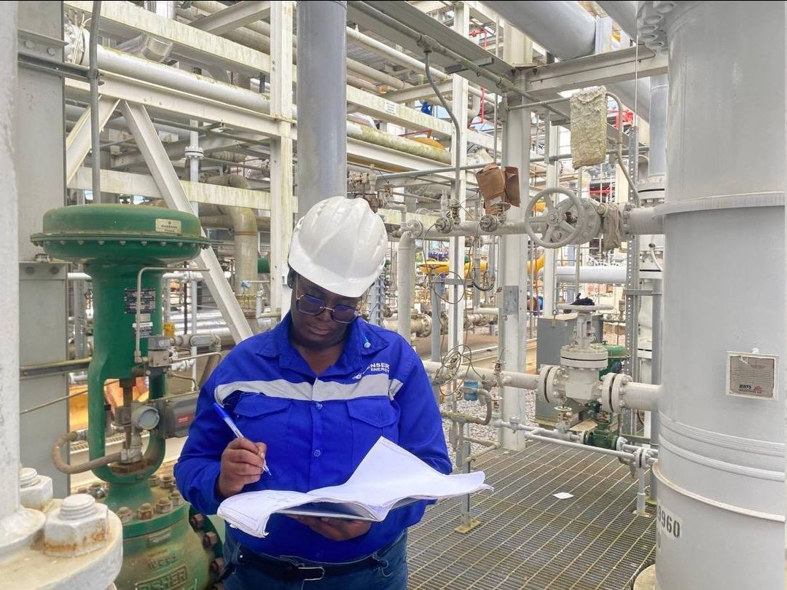
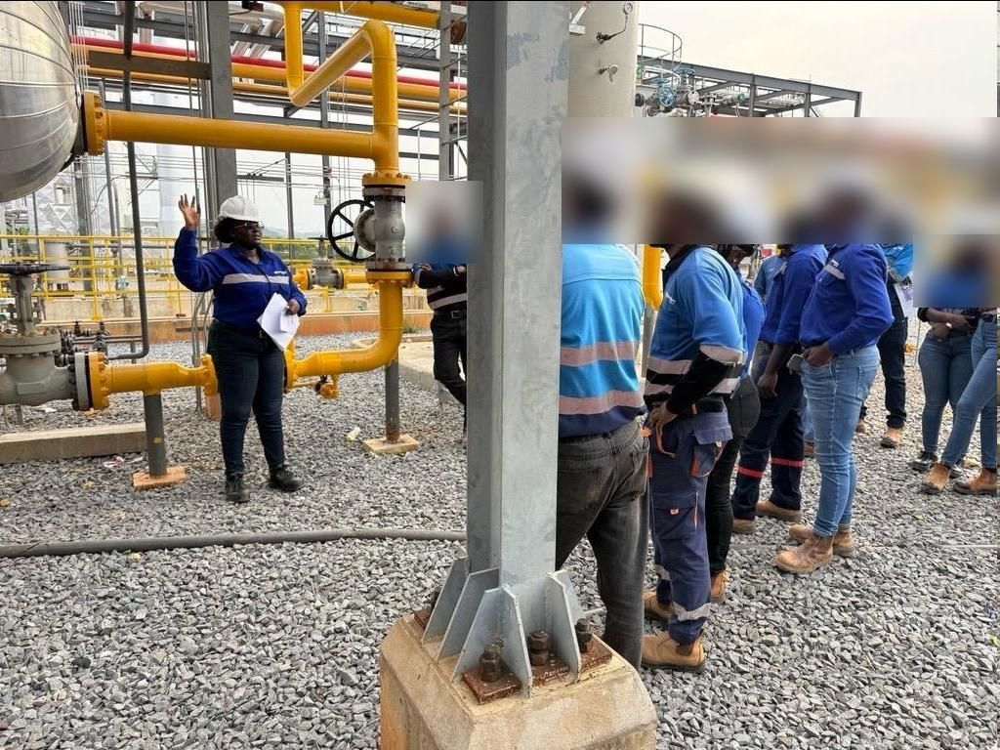

Problem solving
Protecting the methanol injection pumps
The main methanol pump sent far more flow than the downstream pump that feeds the cryogenic injection points could handle, putting it at risk of damage.
I recommended a recirculation line on the main pump to return part of the flow to the tank, reducing the flow and pressure on the second pump.
Reported to my manager and escalated to the project and plant managers.

Design review
Keeping the turbo expander safe in a power loss
The design used nitrogen to keep lubricating oil flowing to the turbo expander if power was lost, but the contractor's isometric drawings had left it out.
I walked the contractor through the P&ID and isometrics and made sure it was installed.
Commissioning
Tracking mechanical completion
Checked lines, columns and systems across sweetening, amine regeneration, the cryogenic refrigeration loop, the demethanizer and dehydration, and raised process issues with contractors.
Nitrogen and inerting
Making the plant safe for gas
Test-ran the nitrogen generation units, inerted the cryogenic storage tanks and used nitrogen pressure cycles to remove oxygen before product was introduced.
Operations
Running a 420 km+ pipeline network
Monitored around 23 stations through SCADA, responded to trips and communication issues, and planned flow contingencies with the team.
Leadership
Training the team
Led on-site training for colleagues on the plant's process systems: sweetening, amine regeneration, dehydration and the cryogenic section. I explained what each section does, its operating parameters and principles, and why the compressors matter.
Here, teaching in the sweetening section.
